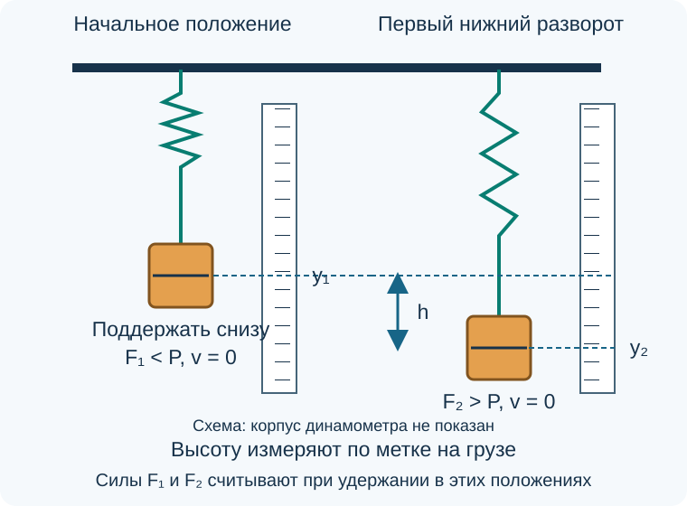

Лабораторная работа «Изучение закона сохранения механической энергии»
При опускании груза пружина динамометра растягивается. В работе сравним уменьшение потенциальной энергии груза и увеличение потенциальной энергии пружины. Крайнее положение определим непосредственно по метке на грузе или нижнем крючке и линейке.
Цель работы
Оборудование
Лабораторный пружинный динамометр, штатив с муфтой и лапкой, небольшой груз, линейка и полоска бумаги для отметок. Масса груза может быть известна, но его вес в любом случае измеряют динамометром. Для проверки равномерного растяжения пружины удобен набор одинаковых грузов.
Указатель динамометра должен быть хорошо виден, а ход подвижной части — свободен. Штатный указатель максимума, если он предусмотрен конструкцией, облегчает отсчёт; при его отсутствии крайнее положение наблюдают по неподвижной бумажной шкале рядом с меткой на грузе. Дополнительный фиксатор внутрь прибора не вставляют. Подвес между грузом и пружиной должен быть коротким и практически нерастяжимым.
Теоретические сведения
Работа силы тяжести
Если груз опустился на расстояние \(h\), сила тяжести совершила положительную работу:
где \(P=mg\) — вес неподвижного груза, измеренный в положении равновесия. Во время движения показание динамометра не следует называть весом неподвижного груза или считать равным \(mg\).
Энергия пружины
Для пружины в области выполнения закона Гука:
В начальном положении пружина уже немного растянута. Обозначим её удлинения в начальном и первом нижнем положениях через \(x_1\) и \(x_2\). Груз и нижний конец пружины перемещаются на одно расстояние:
Увеличение потенциальной энергии пружины можно выразить через силы \(F_1\) и \(F_2\), соответствующие этим положениям:
Здесь использованы формула разности квадратов и закон Гука. Поэтому измерять жёсткость и положение совершенно нерастянутой пружины отдельно не требуется.
Систему составляют груз, пружина и Земля. Энергию пружины учитываем отдельно от потенциальной энергии груза. Масса подвижных частей самого динамометра должна быть мала по сравнению с массой груза; их движение и внутреннее трение ограничивают точность опыта.

Подготовка к работе
- Закрепите динамометр вертикально за корпус, оставив подвижную часть свободной. Проверьте нуль без груза и запишите цену деления силы и линейки.
- Выберите метку на грузе или нижнем крючке и закрепите рядом линейку. Наблюдайте перпендикулярно шкале, чтобы уменьшить ошибку отсчёта. Бумажную полоску для отметок прикрепите к неподвижной опоре, не к пружине. Шкала сил и линейка перемещений — разные шкалы: высоту измеряют по линейке, а не переводят деления силы в метры.
- Проверьте с учителем, что равные прибавки известной нагрузки вызывают примерно равные перемещения указателя. Для опыта нужна пружина, работающая в линейной области, без заедания и заметного остаточного растяжения.
- Подвесьте груз, дождитесь покоя и измерьте \(P\). Выберите вместе с учителем начальное положение выше равновесия, но с небольшим положительным показанием \(F_1<P\). Поддерживать груз следует рукой снизу, не касаясь указателя.
Порядок выполнения работы
1. Измерение начального положения
Поддерживая груз снизу, установите его в выбранном начальном положении. Отметьте координату выбранной метки \(y_1\) по линейке; направление отсчёта выберите вниз. Запишите показание \(F_1\). Пружина должна оставаться растянутой, а подвес — натянутым.
2. Определение первого нижнего положения
Плавно уберите поддерживающую руку, не сообщая грузу толчка. Наблюдайте первое самое низкое положение, после которого груз начинает подниматься.
- Если есть штатный указатель максимума, перед каждым запуском устанавливайте его по инструкции прибора. После остановки груза медленно воспроизведите отмеченное им положение пружины и измерьте координату метки на грузе по линейке. Фиксатор не должен заметно тормозить движение.
- Если указателя максимума нет, один ученик отпускает груз, второй отмечает нижний разворот относительно неподвижной бумажной шкалы. Затем груз останавливают и наносят отметку. Сначала выполните пробные запуски; после них каждый из трёх зачётных запусков наблюдайте отдельно и записывайте собственный отсчёт, сохраняя его разброс.
Запишите \(y_2\) и вычислите \(h=y_2-y_1\). Не заменяйте нижний разворот положением, в котором груз успокоился.
3. Измерение конечной силы
После остановки груза медленно оттяните его рукой вниз до отмеченного положения \(y_2\), удержите неподвижно и считайте \(F_2\). Измеряется сила пружины при том же удлинении; ловить быстро меняющееся показание во время движения не нужно. Не вычисляйте \(F_2\) из ожидаемого равенства энергий.
4. Повторение измерений
Выполните три запуска из одного начального положения. Перед каждым запуском вновь проверьте \(y_1\) и \(F_1\); для каждого полученного \(y_2\) отдельно измерьте \(F_2\). Все результаты сохраните, даже если они различаются.
Результаты измерений
Отдельно запишите \(P\) и цены деления приборов. Координаты \(y_1\) и \(y_2\) отсчитываются от одного произвольного нуля линейки; для расчёта нужна их разность.
| Опыт | \(y_1\), м | \(y_2\), м | \(h\), м | \(F_1\), Н | \(F_2\), Н |
|---|---|---|---|---|---|
| 1 | |||||
| 2 | |||||
| 3 |
Обработка результатов
- Переведите длины в метры. Для каждого опыта вычислите работу силы тяжести \(A_g=Ph\).
- Вычислите увеличение энергии пружины \(\Delta E_{\text{пруж}}=(F_1+F_2)h/2\).
- Найдите абсолютное и относительное расхождения:
Относительное расхождение не является полной погрешностью опыта. Универсального процента, который сам по себе доказывает выполнение закона, здесь нет.
| Опыт | \(A_g\), Дж | \(\Delta E_{\text{пруж}}\), Дж | \(d\), Дж | \(\varepsilon\), % |
|---|---|---|---|---|
| 1 | ||||
| 2 | ||||
| 3 |
Пример вычисления энергии
Как подставлять величины
Для условных значений \(F_1=0{,}4\ \text{Н}\), \(F_2=1{,}6\ \text{Н}\) и \(h=0{,}03\ \text{м}\):
Это пример расчёта. В таблицу вносят собственные измерения.
Оценка точности
Сопоставьте разброс нижних положений в трёх опытах с ценой деления линейки. Оцените неопределённость чтения \(P\), \(F_1\) и \(F_2\) по шкале динамометра. Объясните, что сильнее ограничило результат: отсчёт крайнего положения, отсчёт сил или особенности прибора.
В обе расчётные величины входит одно и то же измеренное \(h\). Поэтому ошибка высоты одинаково масштабирует обе энергии; их относительное расхождение определяется прежде всего измеренными силами. Не считайте совпадение двух столбцов полностью независимой проверкой всех измерений.
Потери на внутреннее трение, сопротивление воздуха и движение деталей прибора могут приводить к расхождению. Заедание указателя, удар об упор или провисание подвеса делают выбранную модель неприменимой; такой запуск нужно повторить после устранения причины.
Вывод
Укажите измеренные работу силы тяжести и увеличение энергии пружины, их расхождение и наблюдавшийся разброс. Объясните, позволяют ли точность измерений и устройство прибора считать результаты согласующимися с законом сохранения механической энергии. Не подгоняйте данные под равенство.
Отчёт оформите в порядке: название, цель, оборудование, схема, таблица измерений, расчёты, оценка точности, вывод.
Контрольные вопросы
Проверьте понимание опыта
1. Почему начальное положение выбирают выше равновесия, сохраняя небольшое растяжение пружины? 2. Почему в двух выбранных положениях можно не учитывать кинетическую энергию груза? 3. Почему конечную силу измеряют после опыта при воспроизведённом удлинении? 4. Почему нельзя заменить первый нижний разворот окончательным положением покоя? 5. Какие части установки могут рассеивать механическую энергию?
Домашнее задание: § 40–47, повторить. Завершить обработку собственных измерений, если она не закончена на уроке.